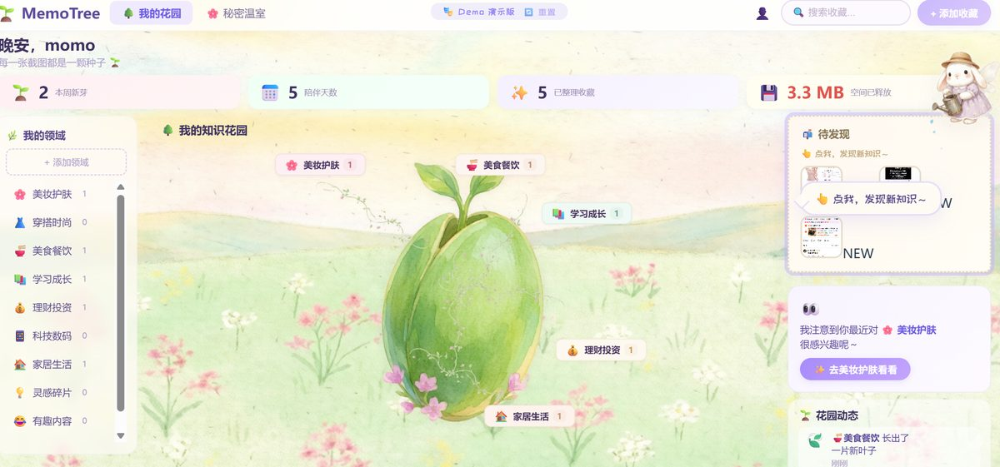
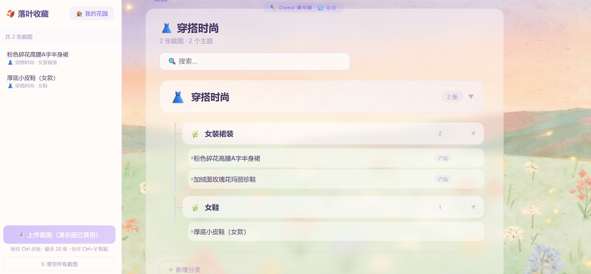
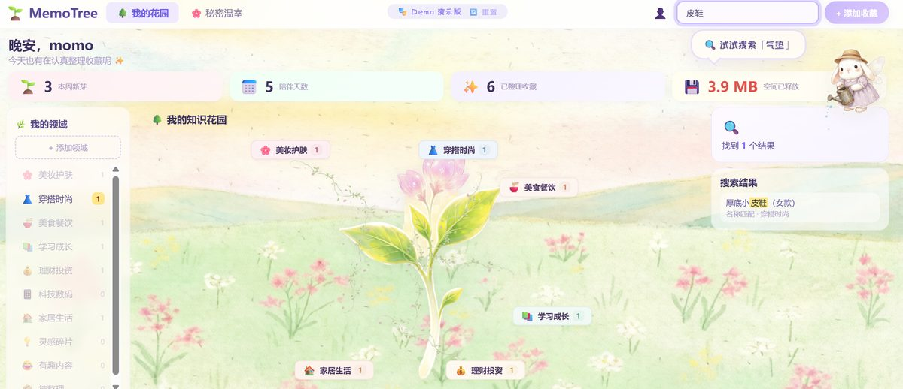

产品简介
解决的问题
MemoTree 解决的是一个"二次整理"场景。用户在 App 内收藏了大量内容——一个视频里可能只有几句话真正有用，一篇帖子可能只有一两个产品推荐值得记住。于是用户做了一轮手工筛选：截图保存有价值的部分，然后把原始收藏清掉。但截图越攒越多，全是高密度文字信息，逐张翻找几乎不可能。删掉又觉得可惜——毕竟每一张都是自己筛选过的。截图里的文字对系统不可见，信息之间没有关联，它们只是"一堆图"，不是"一个知识库"。
目标用户
高频使用内容平台的年轻女性——她们不想要另一个冷冰冰的效率工具，但会被"好看、有温度"的产品吸引。
为什么做这个产品
MemoTree 做的不是文件管理器，而是在截图之上加了一层 AI 知识整理系统。OCR 提取文字、AI 理解内容并自动归类、提取结构化信息——让过去收藏的内容可以被检索、被关联、被再次利用。产品经历了三次定位迭代：从单张截图分析工具，到知识整理系统，最终形成"知识花园"产品理念——每一次转向都来自真实使用中发现的问题。

用户痛点
❌ 传统方式
- 二次收藏后从不会回看——"以后再看"从未来过。回看成本太高：要在几万张截图里逐张翻找
- 内容无法检索——想找"之前看到过的那款眼影"，不记得品牌、不记得色号、不记得什么时候截的
- 信息之间没有关联——不知道有多少美妆收藏、多少穿搭灵感，只是"一堆图"不是"一个知识库"
- 收藏即遗忘——用户的真实心理是"删掉觉得可惜，放着又找不到"
✅ MemoTree 解决方案
- 上传截图 → AI 自动识别内容、归类、提取产品名/品牌/价格/推荐理由，碎片信息变成结构化知识节点
- 搜索"精油"直接展示推荐理由、价格、店铺，不需要打开原始截图
- 知识树体系：大类（主干）→ 子分类（树枝）→ 具体产品（叶片），一眼看到知识全景
- 首页不是文件列表，是知识花园——用户看到的是"我的知识正在被好好整理和使用"的安心感
核心矛盾：被遗忘的二次收藏 vs 重新激活信息价值 → 不只是"整理"，是让过去保存的内容重新产生价值
产品生命周期
核心功能

三级知识树体系
大类（主干）→ 子分类/容器（树枝）→ 具体产品/知识（叶片）。默认折叠到第二层，结构框架始终可见。同一张截图中的多个产品各自成为独立节点。树随收藏数量从种子→幼苗→小树→大树成长，用户看到的是"我的知识正在生长"。
💡 子分类是容器不是最终内容——"护发产品"是分组，"raip 护发精油 R3"才是叶子节点。全展开会让用户窒息，但两层框架始终可见。

内容直显搜索
搜索"精油"不只是匹配到节点——而是直接展示推荐理由、价格、店铺，高亮匹配文字，自动展开匹配节点。用户不需要在文件夹里翻找。搜索时左侧领域面板显示每个分类的命中数量，无匹配的分类变灰。
💡 搜索在技术上"可用"不等于产品上"可用"——关键是匹配内容要被提取出来展示，而非引导用户去翻文件夹。

灵感墙 · 秘密温室
6 个玻璃罩，每个罩子里随机展示一张用户收藏的截图。点击任意一朵花，就能重新发现那条曾被遗忘的内容。不是冷冰冰的"全部截图"列表，而是一个"我的收藏像花朵一样被展示"的发现空间，让过去的收藏有被再次看见的机会。
💡 整理的目的不只是"找到"，还包括"重新遇见"——用户可能在随机浏览中发现一条三个月前收藏的眼影推荐，正好今天想买。
知识花园首页
首页不是文件管理器，而是一棵随收藏数量成长的动态树。左侧领域面板、右侧 AI 今日发现。统计卡片用"本周新芽""陪伴天数"代替"本周新增""使用时长"。上传完成后种子从天空飘落，小兔子在右上角浇水。用户不是来"管理文件"的，是来"看看我的知识花园今天什么样"的。
💡 如果目标用户是年轻女性，产品需要好看、有温度、有情感反馈——这不是"加皮肤"，而是从交互模式到文案语气的整体设计选择。
AI 设计思考
📥 输入
- 用户截图（含订单、聊天记录等隐私信息）
- 10 个内容分类体系
- 已有知识树结构（历史数据）
⚙️ AI 处理
- OCR 本地提取文字（Tesseract.js，图片不出设备）
- 按内容领域分类（非按来源平台）
- 结构化提取信息点（产品名 / 品牌 / 价格 / 推荐理由）
- 判断多产品：一张截图中的多个产品各自成为独立节点
📤 输出
- 自动归类后的知识节点
- 结构化信息字段（品牌 / 型号 / 价格 / 推荐理由）
- 可搜索、可浏览的知识地图
- 会生长的知识树可视化
↑ 收藏越多，知识树越茂盛——从种子到幼苗到小树到大树 ↑
产品复盘
🌱 我学到了什么
- AI 产品不能只关注模型能力，需要关注用户真实流程——V1 在技术上"能跑"但产品上"不能用"
- 信息整理产品的核心不是分类，而是建立长期可复用的知识结构——搜索时能直接展示内容而非文件夹
- 产品调性需要匹配目标用户——年轻女性需要好看、有温度的产品，不是命令行工具
- 用自己的产品是发现问题的唯一方式——"搜索不工作""节点名太抽象"都是在真实使用中发现的
- 面向特定人群的产品，UI 本身就是产品价值的一部分——MemoTree 是三个项目中唯一做了完整视觉设计的，年轻女性用户不会打开一个看起来像开发者工具的产品
⚖️ 做出的取舍
- OCR 选本地运行（Tesseract.js）而非云端——截图含隐私信息（订单、聊天记录），不上传服务器
- "购物收藏"分类被删除——它和美妆、穿搭等维度冲突，同一张图可以既是购物又是美妆
- 默认折叠到第二级——几十个子分类全展开会让用户窒息，但两层框架始终可见
- 存储选 JSON 文件而非数据库——目标用户零技术背景，不能要求安装数据库
- 知识树的生长动画放弃纯代码实现，改用图片切换——代码生成的树不够精致，作为首页视觉中心必须好看
🚀 未来优化方向
- 优化 OCR 对不同截图质量的适应性——高密度文字截图的识别准确率仍有提升空间
- 知识节点之间建立关联推荐（"买了眼影的人还收藏了这些眼线笔"）
- 支持更多输入形式（小红书链接、淘宝分享链接）
- 导出功能——将整理好的知识树导出为 Notion 或 Markdown 格式